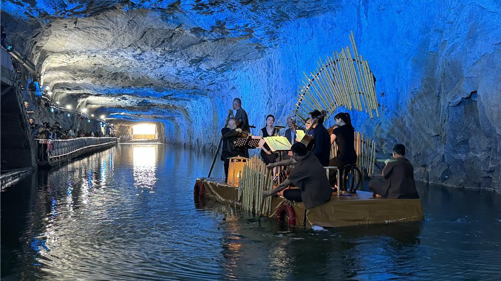

景點介紹
翟山坑道為花崗岩開挖而成，成為一個天然的音箱，還有海浪自然的聲音。因此我們特別利用坑道的水道做為表演舞臺場域，舉辦金門坑 道音樂節表演，推廣軍事史蹟活化再利用觀念，並以軟性的音樂宣揚 和平理念。
活動時間以主辦單位最新公告為主

循階梯而下，走進翟山坑道幽暗的光線裡，鬼斧神工的軍事傑作就在眼前，坑道盡頭接引著深不見底的海水，在炎熱的夏季裡替旅人們帶來一些清涼。
既長而寬闊的坑道及水道兩區域，是八二三砲戰期間，動員無數人力、耗費五年時間，才辛苦鑿出這條能夠容納42艘水道小艇進出、迴轉的極大的工程，又被譽為「地下金門」傑作之一。